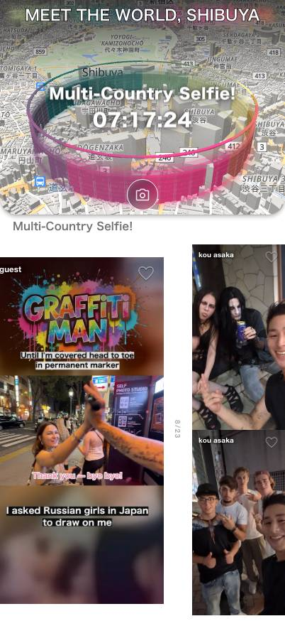

1
1

Y=874 / 現行の下端
クエストって、なに？
Toopdbq は、いま自分がいる場所で、まわりにいる人と友達になるためのアプリです。
01
サークルは、地図の上にある「輪」
サークルは、地図の上にかかれた輪のことです。駅の前、公園、お祭りの会場、学校のまわり。どこにでも作れます。誰かが「ここにサークルを作ろう」と決めると、その場所に輪ができます。
02
その輪から、お題が出ます
輪には、お題が出ます。これをクエストと呼びます。
QUEST
Multi-Country Selfie!
07:17:24
EXAMPLE
たとえば「今日いちばんの笑顔の写真」。たとえば「路地裏のおいしい一杯」。お題はその場所だけのもので、ほかの場所には出ません。
03
答えられるのは、輪の中にいる人だけ
ここが、このアプリでいちばん変わっているところです。
クエストに答えられるのは、いま本当にその輪の中にいる人だけ。家から見ているだけの人は、答えられません。
だから答えが集まったとき、そこに並んでいるのは「同じ時間に、同じ場所にいた人たち」だけになります。
OUTSIDEINSIDE — 答えられる
04
答えかたは、カメラで撮るだけ
むずかしいことはありません。
お題に合う写真か動画を、その場でカメラで撮ります。撮れたら、投稿します。それだけでクエストは達成です。

05
自分が出すまで、ほかの人の答えは見えません
投稿する前は、ほかの人の写真にはぼかしがかかっていて、何が写っているかわかりません。
でも、自分が1枚出したしゅんかん、ぼかしが消えます。その日その場所にいた全員の答えが、いっせいにひらきます。
これは意地悪をしているのではありません。見ているだけの人ばかりになると、だんだん誰も出さなくなってしまうからです。1枚出した人だけが、みんなの1枚を見られる。おたがいさま、という決まりです。


BEFOREAFTER
06
ひらいたら、「いいね」が押せます
ひらいた写真の中に、きっと気になる1枚があります。そこに「いいね」を押してください。
知らない人にいきなり話しかけるのは、大人でもむずかしいことです。でも「いいね」なら押せます。
相手には、同じお題に答えた人からいいねが来たことが伝わります。おたがいに「同じ場所にいたんだ」とわかるので、そこから話が始めやすくなります。
メッセージが続いて、次に会う約束になることもあります。知らない人が、話せる相手に変わっていきます。
1
07
あなたがどこにいるかは、ほかの人には見えません
位置情報は、2つのことにしか使いません。
- 近くにサークルがあるかを探すため
- いま輪の中にいるかを確かめるため
あなたの現在地が、地図の上にほかの人へ表示されることはありません。
08
なぜ、Toopdbq をつくったのか
大学のサークルを思い出してみてください。入った日はただの他人だったのに、いっしょに何かをしているうちに、いつのまにか友達になっている。あの気軽さが、世界中のどこにでもあったらいいのに。そう思ってこのアプリを作っています。
つづきを読む
小さな村では、住んでいる場所が同じというだけで、人は自然と話すようになります。買い物に行けば顔を合わせるし、道ですれちがえば挨拶をします。
でも、都会ではそれが起きません。人が多すぎるからです。同じ駅を毎日使って、同じ店に通っていても、話したことは一度もない。きっかけがないまま、たぶん一生交わらない。それは、もったいないことだと思いました。
友達になるために必要なのは、自己紹介ではないと思っています。必要なのは、いっしょに何かをすることです。同じことをやった人どうしなら、話すことが最初からあります。
だから、みんなで取り組めるお題をつくりました。それがクエストです。同じ場所にいるだけだった人が、同じお題に答えた人になる。そこから話が始まる。それが世界のあちこちで起きたら、世界はもう少しフレンドリーになるはずです。テクノロジーには、それができると思っています。
開発者 : あさか こう